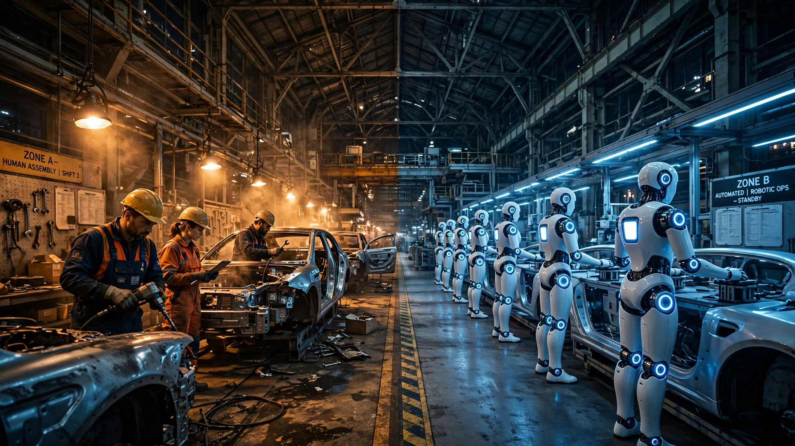

🤖 Robotics · 💼 Labor & AI
$5.07 an Hour: The Math Behind the First Factory Strike Over Humanoid Robots
Hyundai's 40,000 unionized auto workers just shut down production in Ulsan over a robot that costs less per hour than a Seoul parking meter. Here's the calculation nobody in management wants to say out loud.

The number is $5.07.
Remember it. That's what a single Boston Dynamics Atlas humanoid robot costs per operating hour over a five-year lifespan, at the early mass-production price of $130,000 per unit that a South Korean government research institute estimated and the Wall Street Journal reported this week. A Hyundai production worker in Ulsan costs roughly $32.50 an hour in total compensation, which means Atlas is 84% cheaper. No breaks, no night-shift fatigue, and joints that rotate 360 degrees while handling the kinds of components that give human shoulders rotator cuff injuries by age 45.
This week, Hyundai's auto workers went on a partial strike. It's the car industry's first factory stoppage over humanoid robots, and it happened not in Detroit or Stuttgart but in Ulsan, the southeastern Korean city where Hyundai produces roughly half its global output. Workers are refusing four hours of work per day, which industry estimates say disrupts production of about 5,000 vehicles and costs Hyundai some 200 billion won ($134 million) in lost sales. Banners in Ulsan's streets demand "pre-emptive action" against the robot threat.
The union's position is simple: Atlas doesn't step onto a production line without workers agreeing first. Management's position is simpler, and it involves a map rather than a negotiating table: Atlas is going to the nonunionized Metaplant in Georgia instead.
The cost-per-hour calculation nobody's publishing
Every article about Atlas mentions the $130,000 price tag. Almost none of them do what comes next, which is convert that sticker price into a per-hour operating cost and compare it, honestly, to the all-in cost of the human worker it replaces. So here's the math.
Atlas has a four-hour battery with hot-swap capability, which means one unit coming off charge slots immediately into position while another docks, allowing Boston Dynamics to promise continuous industrial operation. A conservative estimate of 20 operating hours per day across 350 working days yields 7,000 operating hours per year. Over five years, that's 35,000 hours of work per unit. Korean union sources, cited by Automotive World, put annual maintenance at about KRW 14 million ($9,500).
| Cost Element | At $130K (Early) | At $30K (Scale) |
|---|---|---|
| Unit purchase price | $130,000 | $30,000 |
| 5-year maintenance | $47,500 | $47,500 |
| Total 5-year cost | $177,500 | $77,500 |
| Total operating hours | 35,000 | 35,000 |
| Cost per hour | $5.07 | $2.21 |
Now compare that to human labor across the markets where Hyundai operates:
| Labor Market | Approx. All-In Hourly Cost | Atlas Savings (at $130K) | Atlas Savings (at $30K) |
|---|---|---|---|
| South Korea (Ulsan, unionized) | $32.50 | 84% | 93% |
| United States (Georgia, non-union) | $25.00 | 80% | 91% |
| Germany | $40.00+ | 87% | 94% |
| China | $6.00 | 15% | 63% |
What the table reveals is something raw unit prices obscure. In every high-wage manufacturing country, Atlas is already overwhelmingly cheaper than human labor, even at prototype-adjacent pricing and before any learning-curve improvements kick in. It doesn't need to reach its $30,000 scale target to destroy the economics of a Korean or American assembly job.
It already has.
China is the outlier, and a revealing one. At $6 per hour for a factory worker, the $130,000 Atlas saves only 15% on labor costs, hardly enough to justify the capital outlay and integration risk when you can hire another person for the cost of Atlas's actuator maintenance budget alone. But at scale pricing of $30,000, even Chinese manufacturing jobs face a 63% cost disadvantage, which explains why Morgan Stanley has revised its China humanoid shipment forecast upward three times this year, from 14,000 to 28,000 to 50,000 units for 2026 alone. By 2030: 446,000 annual shipments.
The strike cost paradox
Here's the part that should keep Byun Jun-hwan, the union's lead negotiator, awake at night. Really awake.
Hyundai's partial strike is costing the company an estimated $134 million in disrupted vehicle sales over a few days. Hyundai has committed to deploying 25,000 Atlas robots across its factories from 2028, at a total investment of roughly $3.25 billion at the early production price. That strike cost of $134 million represents 4.1% of the entire robot deployment budget, burned in less than a week.
Put differently: every day of the strike, Hyundai loses enough money to purchase approximately 1,034 Atlas robots at scale pricing, which means the union's most powerful weapon, the work stoppage that has defined labor power for 150 years, now has a perverse secondary effect. It quantifies, in real time, exactly how expensive human labor unreliability is. Every banner in Ulsan reading "pre-emptive action" is also a banner reading "$134 million in three days" to the board of directors.
And those 25,000 robots would save Hyundai an estimated $1.625 billion per year in labor costs, meaning the entire $3.25 billion investment pays for itself in exactly two years, a payback window the WSJ confirmed independently. After year two, every dollar that previously went to a human assembly worker drops to Hyundai's bottom line as pure margin.
Why South Korea first
South Korea has the highest industrial robot density on Earth: 1,220 robots per 10,000 manufacturing employees, according to the International Federation of Robotics. That's more than six times the global average. It is not an accident that the first humanoid labor conflict erupted here. Korean industry was already the most automated in the world. The leap from fixed-purpose robotic arms to mobile humanoids is shorter in a country that has been living alongside industrial robots for decades than in one just beginning to automate.
It also helps that Hyundai owns Boston Dynamics outright, having acquired an 80% stake in 2021 before buying the remaining shares from SoftBank in June 2026. Atlas isn't a vendor product that Hyundai might or might not adopt. It's a subsidiary's flagship offering that Hyundai has committed to absorbing 83% of, consuming 25,000 of its 30,000-unit annual production target before a single robot reaches an external customer. At a JPMorgan investor session in May, executives from six Hyundai affiliates laid out the roadmap: Metaplant America in Savannah, Georgia gets Atlas first in 2028 (conveniently nonunionized), Kia's Georgia plant follows in 2029.
South Korea's president, Lee Jae Myung, hasn't helped the union's case either. He's declared it "impossible to avoid the giant chariot that is rolling on." The country is also weighing a "robot tax" on companies that deploy automation, which sounds progressive until you realize it's an implicit concession that the robots are coming regardless and the only remaining question is how to divide the wreckage between workers, shareholders, and the public treasury.
The global arms race in humanoid factory workers
Hyundai isn't doing this alone. Not even close. The last 90 days have produced a cascade of humanoid deployment announcements that would have seemed fictional five years ago:
- BMW began testing the "Aeon" humanoid robot in Germany last month, after running two Figure 02 robots through an 11-month trial at its Spartanburg, South Carolina plant.
- Mitsubishi Motors announced plans to mass-produce humanoid robots by early 2027 for engine assembly.
- General Motors added dozens of cobots to its Factory Zero in Detroit while simultaneously laying off roughly 1,000 workers.
- Tesla expects Optimus production to begin by year's end, at a target price of $20,000 to $30,000.
- Xiaomi has started trial runs of humanoids in its EV plants.
- XPeng is scaling IRON robot production to 1,000 units per month by year's end, with a global commercial rollout in 2027.
Pricing pressure is real and accelerating. While Atlas commands $130,000 today, competitors are racing to the floor. Tesla's Optimus and China's Unitree G1 are both targeting $20,000 to $30,000. Hyundai's own roadmap, per Seoul Economic Daily, projects Atlas dropping to $30,000 per unit once production exceeds 50,000 units. At that price, the cost per operating hour falls to $2.21. That undercuts a South Korean auto worker by 93% and turns even Chinese manufacturing jobs into candidates for replacement.
What the union actually wants
The Korean Metal Workers' Union isn't naive. Far from it. Their demands are structurally interesting because they're designed for a world where robots are inevitable but humans want to capture some of the surplus:
- Shift from hourly to salaried pay for production workers, which protects against reduced work hours as automation takes over specific tasks.
- Raise retirement age to 65 (from 60), extending the runway for workers who can't easily retrain.
- 30% of net profit as performance bonuses, tying worker compensation to the company's AI-driven gains. With Hyundai's 2025 net profit of 10.36 trillion won, that would mean roughly 3.09 trillion won ($2.1 billion) paid out to workers.
- Formal labor-management agreement required before any humanoid deployment on Korean factory floors.
The 30% net profit demand is aggressive by any standard, even by the benchmarks of Korea's increasingly combative labor landscape where semiconductor and biotech unions are setting new precedents with every negotiation cycle. SK Hynix agreed to 10% of operating profit. Samsung's union is asking for 15%. Hyundai's workers want 30% of net, which is a different and substantially larger number. But the logic is coherent: if Atlas generates the $1.625 billion per year in labor savings that the deployment math suggests, workers want contractual access to a share of that windfall before the headcount starts falling.
The closing window
There's an actuarial irony buried in this standoff, and it's a grim one. An analyst at iM Securities, Koh Tae-bong, pointed out to the Korea JoongAng Daily that much of Hyundai's current Ulsan workforce entered the factories in the 1970s and is approaching retirement. "Once the bulk of today's militant union cohort retires," Koh said, "the gap could be filled with humanoids rather than new hires."
This is the leverage window closing. Organized labor's power depends on one thing: the scarcity of the labor it provides, a scarcity that is real today but has an expiration date stamped on it in the form of a 2028 deployment timeline. Once Atlas can reliably do the same work, the employer no longer needs to negotiate with 40,000 humans who can walk off the line, and Hyundai has already given itself a preview of that future by routing Atlas's first deployment to a nonunionized facility in Georgia, 7,000 miles from Ulsan's picket lines.
Limitations
The cost-per-hour calculation above assumes Atlas can sustain 20 productive operating hours per day, which is what continuous hot-swap battery operation theoretically allows but has not yet been demonstrated in sustained factory deployment. No real-world footage of the mass-production Atlas in operation has been publicly released. At CES 2026, it appeared only as a mock-up. Boston Dynamics' YouTube factory deployment video is a 3D rendering, not live footage. Susanne Bieller, general secretary of the International Federation of Robotics, warned that "humanoids with flashy skills that have impressed the public are often prototypes trained for a highly tailored demo."
The maintenance cost of KRW 14 million ($9,500) per year comes from union-cited estimates, not from Boston Dynamics or independent testing. Real-world maintenance costs for a humanoid performing 7,000 hours of annual factory labor could be significantly higher, particularly for actuators (which represent 60% of manufacturing cost and are the highest-wear component). The $30,000 scale price also assumes production volumes exceeding 50,000 units, which no humanoid manufacturer has yet achieved.
The strongest counterargument
The most credible case against the "robots are inevitable" framing comes not from labor unions but from BMW's own data. Last year, BMW ran two Figure 02 humanoid robots at its Spartanburg plant for 11 months. Two. They handled 90,000 components across 30,000 X3 vehicles. The per-car robot cost: $8.67. The per-hour robot cost: $104, which was double a human worker. BMW wasn't buying economics. It was buying a learning curve.
This matters, a lot, because it suggests the gap between a humanoid robot doing a scripted demo and one doing unstructured factory work at human speed is still enormous. Atlas's 56 degrees of freedom and 110-pound lifting capacity are impressive on a stage. Whether those specs translate to reliable performance on a real production line, shift after shift, for five years without degrading, is an open question that no amount of Morgan Stanley forecasting can answer. If the first Georgia deployment in 2028 produces BMW-like numbers, the payback period stretches from 2 years to never. Labor's best hope isn't the picket line. It's that Atlas can't actually do the job.
The Bottom Line
The first factory shutdown over humanoid robots isn't really about robots, not at its core, but about a $5.07-per-hour number that makes 150 years of organized labor economics wobble on its foundations. South Korea's 40,000 Hyundai workers are fighting the right battle, and they may even win meaningful concessions this week. But the math is a ratchet, not a pendulum. Atlas costs $130,000 today and will cost $30,000 at scale. The union's leverage depends on the gap between what the robot can do and what the job requires, and that gap is closing at the speed of engineering, not negotiation.
What the Ulsan strike really reveals is a countdown. The union has perhaps 18 to 24 months before the first Atlas units go live at the Georgia Metaplant in 2028. That's the window to lock in structural protections: profit-sharing tied to automation gains, retraining guarantees, transition support that scales with deployment speed. After that, the data from Georgia will either prove Atlas works and eliminate the negotiating position entirely, or prove it doesn't and give labor a decade of breathing room. Either way, $5.07 per hour set the terms.
What You Can Do
If you're a manufacturing worker in a high-wage country, the Hyundai playbook is a preview of your next contract negotiation. Push for automation gain-sharing clauses now, before deployment begins, because the leverage to demand them evaporates the moment robots prove reliable. France's Renault has already agreed to mandate reskilling for workers displaced by automation. That's the template. If you're an investor, watch the Georgia Metaplant timeline: first Atlas deployment data in 2028 will be the single most important proof point for the entire humanoid industry, worth more than every Morgan Stanley forecast revision combined. If you're a policymaker, South Korea's proposed robot tax is a starting point, but it's backwards-looking. The better question is how to redirect the $1.625 billion per year in labor savings that 25,000 robots generate into the workforce transition, before the transition happens, not after.